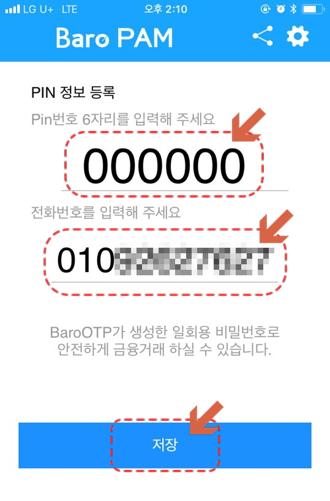

BaroPAM App의 설치
OTP 발생기인
BaroPAM
App의 다운로드는
App store
에서 가능하며,
설치는 일반 App 설치와 동일합니다.
1 |
스마트폰에서
App store
아이콘을 클릭합니다. |
2 |
App store
App이 다음과 같이 실행되면, 상단의 검색란에
BaroPAM
을 입력합니다. |
3 |
상단의 검색란에
BaroPAM
를 다음과 같이 입력하면, App이 검색됩니다. 검색된 APP을선택합니다. |
4 |
BaroPAM
App의 정보를 확인한 후
받기
버튼을 클릭합니다. |
5 |
BaroPAM
App의 다운로드 및 설치가 다음과 같이 진행됩니다. |
6 |
BaroPAM
App의 설치가 정상적으로 완료되면, 스마트폰 바탕화면에 다음과 같은 BaroPAM 아이콘이 추가됩니다. |
BaroPAM App의 사용
1 |
스마트폰에서
BaroPAM
App의 아이콘을 클릭합니다. |
2 |
Pin번호(Pin Number)가 설정되어 있지 않은 경우 (처음 사용하는 경우) 다음과 같이 Pin 정보를 등록하는 화면이 나타납니다. |
3 |
Pin정보의 Pin번호 6자리 숫자와 전화번호를 입력하고, 저장 버튼을 클릭하여 등록합니다. :: Pin번호란? 정보를 보호하기 위해 본인만 알 수 있는 임의의 6자리 문자 |
|  |
4 |
Save가 완료되면 다음과 같은 화면이 나타납니다. One Time Password 를 선택합니다. |
5 |
로그인 정보가 등록되어 있지 않은 경우 (처음 사용하는 경우) 다음과 같이 로그인 정보를 등록하는 화면이 나타납니다. |
6 |
로그인 정보를 입력한 후
Save
버튼을 클릭하여 등록합니다. |
7 |
로그인 정보 목록에 등록된 로그인정보를 클릭합니다. |
8 |
OTP 인증번호가 생성되었습니다. |